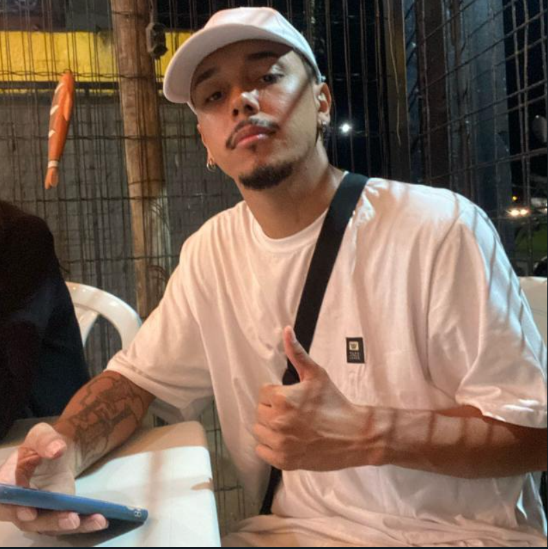

NOME: Pablo Rafael Rosa da Silva
FORMAÇÃO: Análise e Desenvolvimento de Sistema (FATEC-SJC)
OBJETIVO: Ter uma grande experiência profissional, enfrentar novas oportunidades
em que eu possa contribuir da melhor forma possível
CURRÍCULO
FORMAÇÃO ACADÊMICA:
Cursando Análise e Desenvolvimento de Sistemas - FATEC-SJC (2023-2025)
EXPERIÊNCIAS:
Desenvolvedor na empresa Infinity Academy 3D
Suporte técnico na empresa B2BTi Automação Comercial
COMPETÊNCIAS TÉCNICAS:
Programação em Python, Java, C#
Conhecimento em redes e metodologia SCRUM
Experiência em manutenção de computadores
PROJETOS
CURSO DE METODOLOGIA SCRUM:
Desenvolvi um curso de metodologia scrum em HTML e CSS para os funcionários de uma empresa
DASHBOARD PARA JJMLOG:
Junto com minha equipe, desenvolvemos um dashboard para os funcionários da empresa JJMLOG
CHATBOT DE DOCUMENTOS
Desenvolvi um chat bot com a funcionalidade de adquirir informações sobre documentos
Nesse projeto utilizei Java juntamente com a IA da Hugging Face